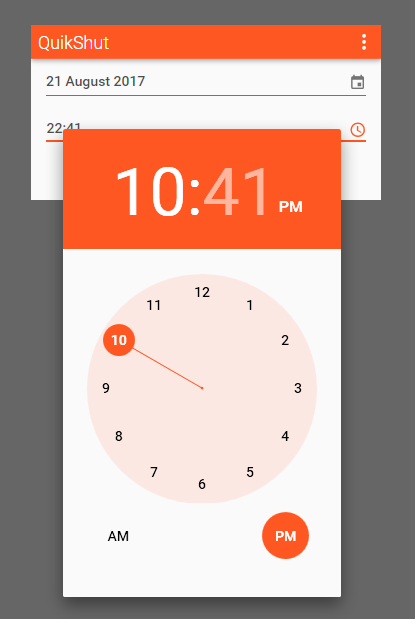

QuikShut was designed to be simple. Using a date and time picker, selecting the exact time you want to shut down is as easy as can be!

Using the Material Design language, QuikShut is simple and beautiful. So what are you waiting for? Get downloading!
Download QS 2017.11